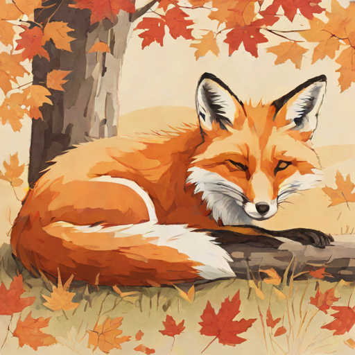
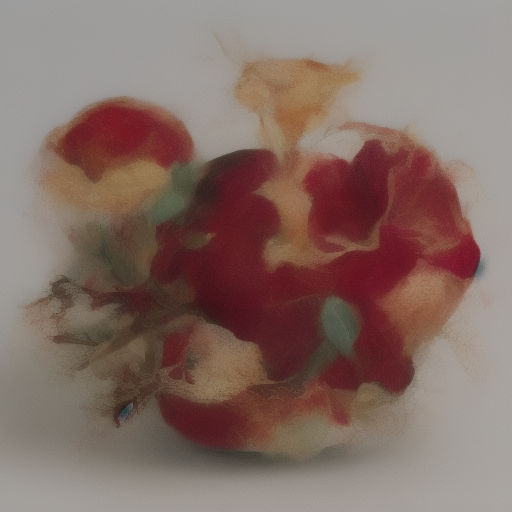

FLUX / image

Scroll-driven / CSS only / Baseline 2024
Every reveal below runs on animation-timeline: scroll() and
view() bound to pure CSS keyframes. The first work is already
mid-entrance right now, before you touch the wheel - proof the animation is
live on load.


